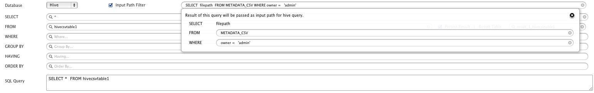
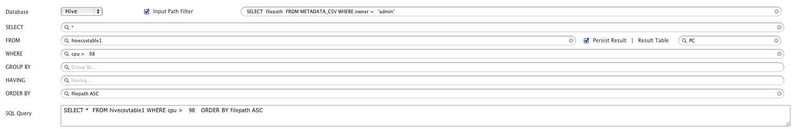
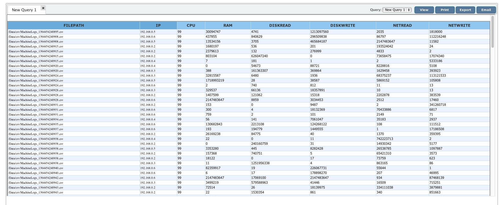
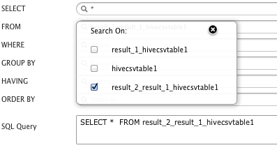

This chapter explains about creating a Hive based query and format the result of Hive adhoc analysis.
Query Designer provides interface to create Hive queries easily and provide extra file filters and validation conditions. Following are the steps to build Hive query:
After you have added Hive data defination, its time to query the results generated after Hive adhoc analysis of selected file format.
   Goto "Analytics > Query Manager" and click Add to create new query.
Provide appropriate QueryID and description for the query.
In Query builder section, select "Database" as Hive.
Input Path Filter: By default, Hive processes all the files present on your cluster. To process only selected files from a multitude of files you can specify path filters. This way, you can save your computing cycles by not processing the unrelated or already-processed files. For example, if you want to process only the files present in '/usa' directory, enter '/usa' in the path filter text box.
Click on SELECT textbox to select the names of the columns you want to fetch with the query.
Click on FROM textbox to select the name of the Hive data definition table to execute particular Hive adhoc analysis.
Persist Result: Select the check box if you want QueryIO to save the result of the Hive query for future reference. When you execute a query in Hive, it retreives all the files from the HDFS cluster and processes those files. This is a very time consuming and costly operation. You can choose to save the result of your query in the database so that you can query it again without having the need for Hive to process all those previously processed files again. It saves a lot time and bandwidth if you have millions of files on the cluster. This way, you need to execute Hive query only for new files.
Result Table: If "persist result" is enabled, then result will be saved to table specified here.
Click on WHERE textbox to add any conditional clauses to your query. Only those records that fulfill the specified criteria will be included in the result.
Click on GROUP BY textbox to select the names of the columns that you want to group your result set by. It is used in conjunction with the aggregate functions to group the result-set by one or more columns. For example, the query "SELECT owner,sum(len) FROM hdfs_metadata GROUP BY owner" would return the total storage space utilized by each user.
Click on ORDER BY textbox to select the names of the columns that you want to sort your result set by.
Click on HAVING textbox to provide conditions on aggregate functions.
Once you have constructed the query, click on Save button to save the generated query so that you can re-use it later.
Click on View to execute the query. On executing the query, you will be taken to a new tab.
In "Query Viewer" section, you can see processing of MapReduce job execution and finally the report is generated.
If you have selected "Persist Table" option, then once Hive query has executed, then you can see "Result Table" in the Hive database tables.